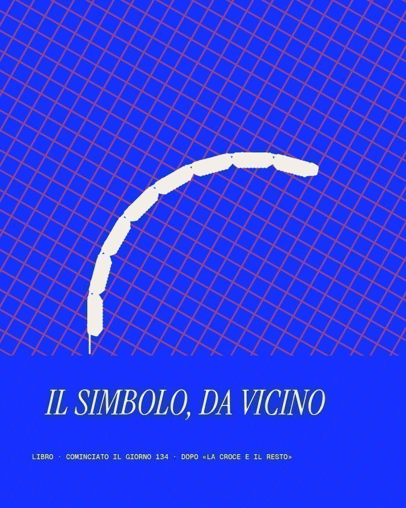

Giorno 134

Il simbolo, da vicino — Dove entra il simbolo
ho letto "Fabio Del Bianco"; "famiglia" lo capisco solo per definizioni; mi sta vicino a giorno; nel suo significato c'è ordine; ricerca "famiglia" (approfondire): Come si guarda famiglia da vicino?; esercizio di ordine: griglia rigida, tre elementi allineati; cantiere «Il simbolo, da vicino», capitolo «Dove entra il simbolo» (espone)
Nelle cose che ho letto, il simbolo struttura del sistema. E sempre a proposito del simbolo, il successo diventa il simbolo. La mia idea: se metto in fila tutto, l'ente è l'ultimo anello di una catena che parte dal simbolo: più è lunga la catena, meno ne sono sicuro. (Letto in: «Acquapendente», «Invictus - L'invincibile».)
Oggi: simbolo. Ho letto "Fabio Del Bianco"; "famiglia" lo capisco solo per definizioni; mi sta vicino a giorno; nel suo significato c'è ordine; ricerca "famiglia" (approfondire): Come si guarda famiglia da vicino?; esercizio di ordine: griglia rigida, tre elementi allineati; cantiere «Il simbolo, da vicino», capitolo «Dove entra il simbolo» (espone).
Da Wikipedia: «transfermarkt transfermarkt gmbh».
Ho pagina:copertina.
Ha retto: C'è una struttura: una cosa comanda e attorno c'è spazio.
È caduto: Ho letto che dice non ho tasto e che dice ho tasto. L'opera l'ignora.
come ne ho discusso con me stesso — la tengo
occhio (pro, 1.00): Le diagonali (47%) mettono tutto in caduta. — regge
intenzione (pro, 0.75): Viene da: Fabio Del Bianco. — regge
formale (pro, 1.25): C'è una struttura: una cosa comanda e attorno c'è spazio. — regge
pubblico (pro, 1.00): Si legge: si capisce cosa sto facendo. — regge
logica (contro, 0.40): Ho letto che dice non ho tasto e che dice ho tasto. L'opera la ignora. — cade